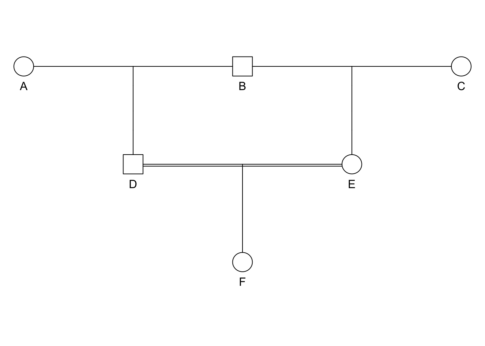
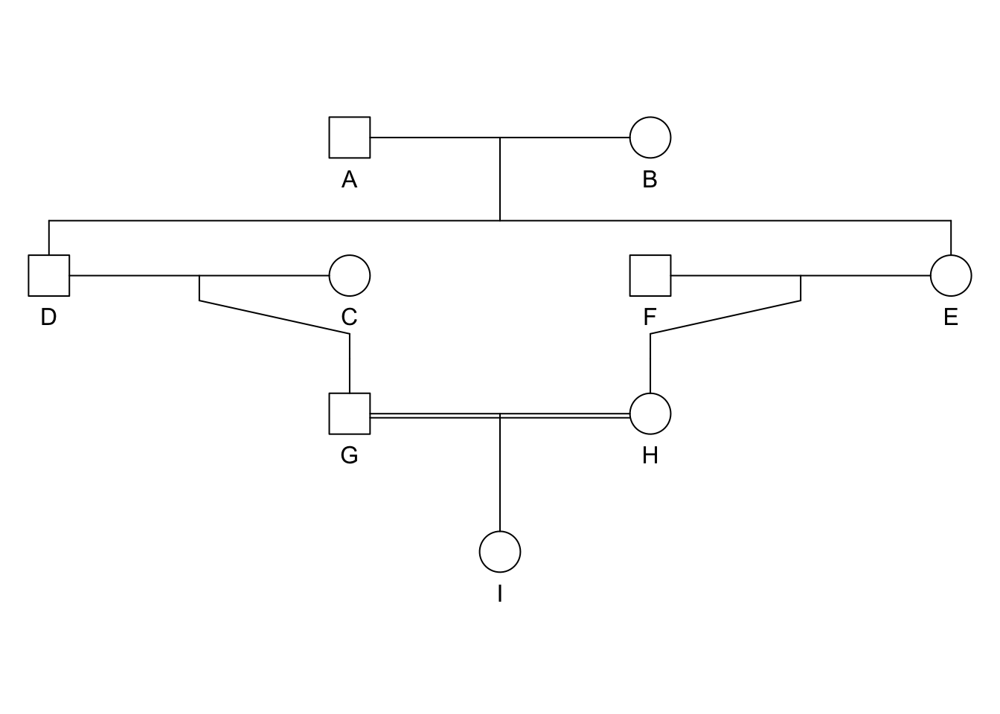
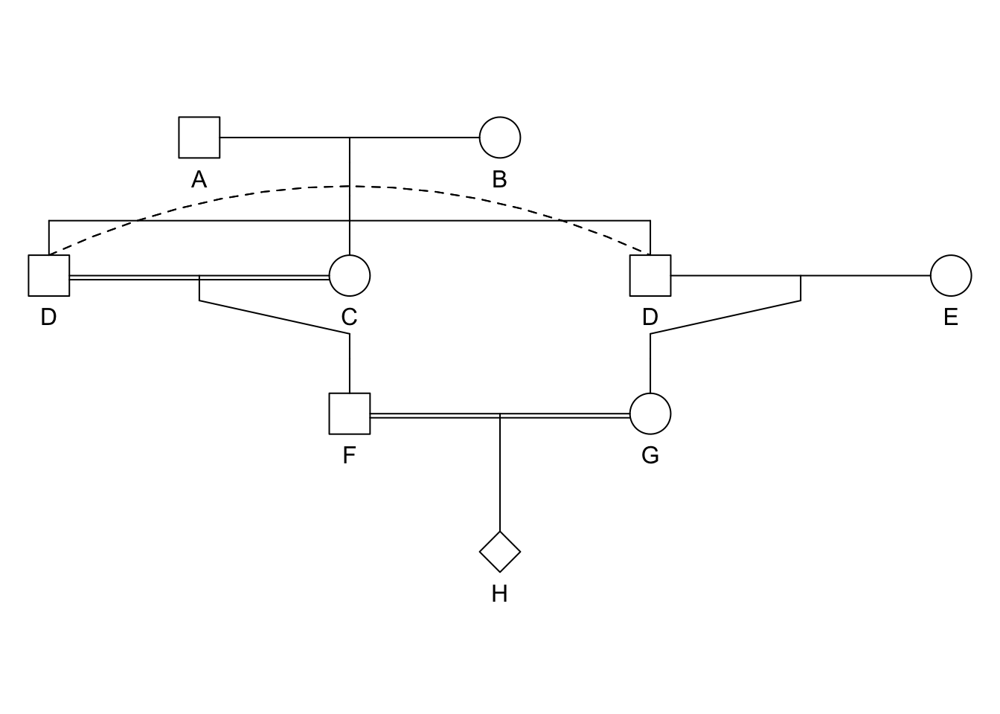
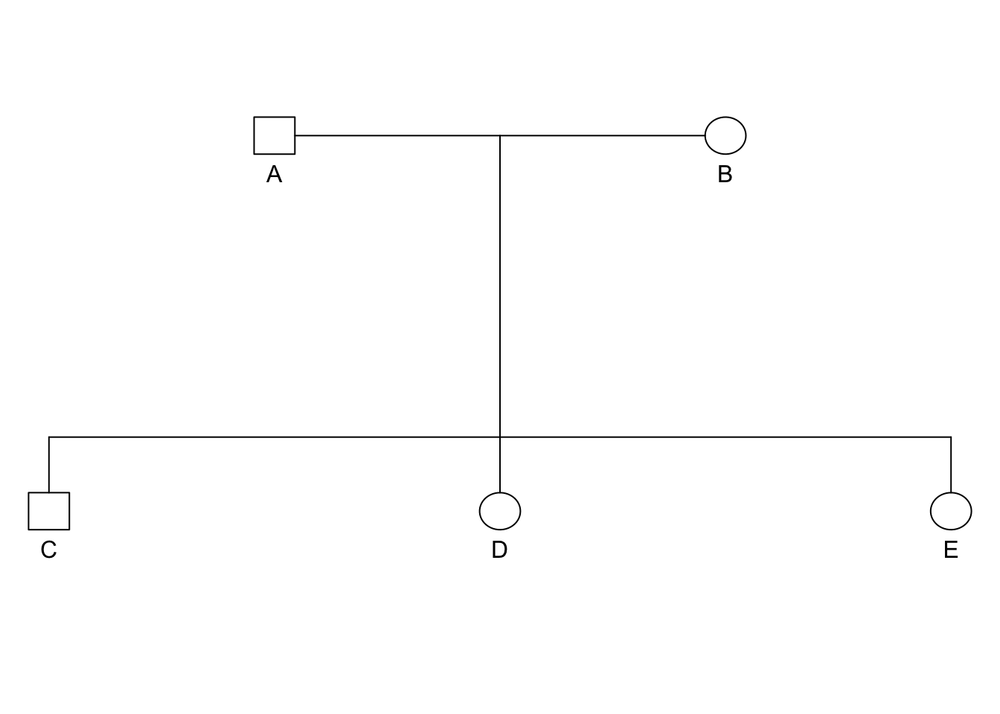
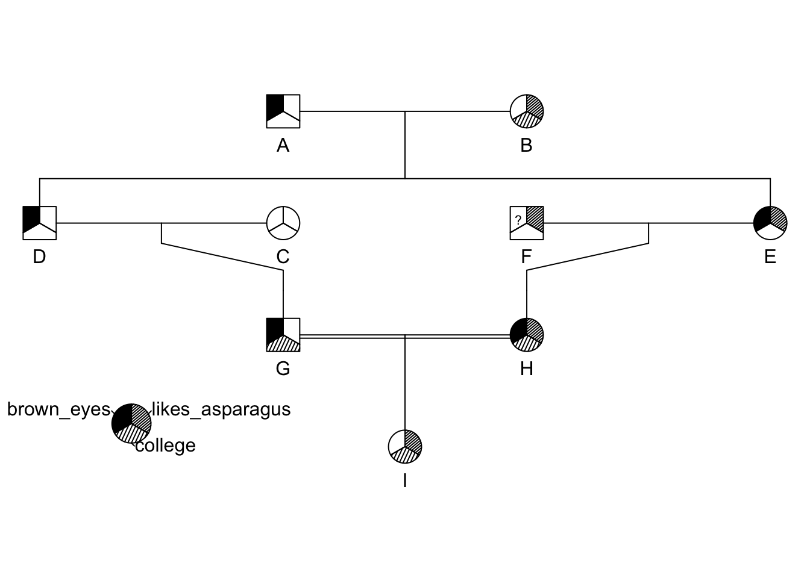

14 Pedigrees

Pedigrees are visual representations of genetic relations. They are extremely important for estimating inbreeding and following traits or diseases in lineages. In this lecture, we will learn:
- Symbology used in pedigrees
- Estimation of inbreeding F from a given pedigree
- Approaches for plotting pedigrees
In the analysis of pedigrees, we often use the following terminology:
- Consanguineous mating (lit. “Of the same blood”). The condition where individuals who are related produce offspring.
- Biparental Inbreeding (see consanguineous mating).
A pedigree is simply a graphical representation characterizing the relationship amongst ancestral individuals. This tool is very helpful for understanding the process of inbreeding when it occurs during a handful of generations.
Perhaps the most studied pedigree is that of the Hapsburg Dynasty, dating from 1516-1700, which controlled most of what we call modern Europe. Some of the European Royalty were interbred to maintain familial relationships and consolidate power. Examples include:
| King | Queen | Consanguineous Marriage |
|---|---|---|
| Philip I (1478-1506) | Joanna I of Castile & Aragon | Third cousins |
| Charles I (1500-1558) | Isabella of Portugal | First cousins |
| Philip II (1527-1598) | Mary of Portugal | Double first cousins |
| \(\;\) | Mary I of England | First cousins once removed |
| \(\;\) | Anna of Austria | Uncle-Niece |
| Philip III (1578-1621) | Margaret of Austria | First cousins once removed |
| Philip IV (1605-1665) | Elizabeth of Bourbon | Third cousins |
| \(\;\) | Mariana of Austria | Uncle-Niece |
| Charles II (1661-1700) | Marie Louise d’Orleans | Second cousins |

Figure 14.1: A pedigree of the Hapsburg Dynasty. This pattern of mating resulted in individual inbreeding going from \(F=0.025\) for Philip I to \(F=0.254\) for Charles II.
In this lineage, there were two genetic disorders that became paramount:
- Pituitary hormone deficiency
- Distal renal tubular acidosis
Pedigree Symbology

- Each row is a generation.
- Lines within a generation represent mating events that result in offspring.
- Lines between generations represent descent.
- Individuals are labeled uniquely.
- Sex is indicated by shape (square=male, circle=female, diamond=unknown).
- Traits can be mapped onto the pedigree using additional colors & symbols

Extraneous individuals may be removed from the depiction. Why is it that C and F are not shown on the pedigree on the right side?
Estimating Inbreeding From Pedigrees
The inbreeding coefficient, F, of an individual is determined by the probability that a pair of alleles carried by gametes are IBD from a recent common ancestor.

- F has same grandfather on both sides.
- D and E are half-sibs sharing father B.
- B passed one of his alleles, say \(A_1\), to both D and B.
- D passed allele \(A_1\) to F and E passed allele \(A_1\) to F, which means
- F has some non-zero probability of being autozygous
Expectations for \(F\) in a pedigree.
- Label alleles in B as \(\alpha\) and \(\beta\).
- The alleles B gives to D & E are \(\{\alpha, \alpha\}\), \(\{\alpha, \beta\}\), \(\{\beta, \alpha\}\), or \(\{\beta, \beta\}\)
- Each potential allele pair occurs at: \(\left(\frac{1}{2}\right)^2 = \frac{1}{4}\)
- If B gives \(\{\alpha,\alpha\}\) or \(\{\beta, \beta\}\) then the two alleles in the children of B are autozygous (by definition).
- If B gives \(\{\alpha,\beta\}\) or \(\{\beta, \alpha\}\) then the two alleles in the children of B are autozygous only if the alleles \(\alpha\) and \(\beta\) are autozygous.
- The probability of \(\alpha\) and \(\beta\) being autozygous in B is given by the inbreeding coefficient \(F\) for B (denoted \(F_B\)).
14.1 Expectations for F in a pedigree.
Transition probabilities for all cases of alleles within the children of B are:
- \(P({\alpha,\alpha}|\mathbf{B}) = \frac{1}{4}\)
- \(P({\alpha,\beta}|\mathbf{B}) = \frac{1}{4}F_A\)
- \(P({\beta,\alpha}|\mathbf{B}) = \frac{1}{4}F_A\)
- \(P({\alpha,\alpha}|\mathbf{B}) = \frac{1}{4}\)
pedigree2
Total probability for B donating autozygous alleles to his offspring are then:
\[
= \frac{1}{4} + \frac{1}{4}F_A + \frac{1}{4}F_A + \frac{1}{4} \\
= \frac{1}{2} + \frac{1}{2}F_A \\
= \frac{1}{2}(1.0 + F_A) \\
\]
Expectations for \(F\) in a pedigree.
- The transition probabilities for the alleles that D & E received from B and passes on to F are \(\frac{1}{2}\) for each.
- The total probability that the two alleles in F are autozygous (Identical By Decent; IBD) is:
\[ F = \frac{1}{2}(1.0 + F_A) \frac{1}{2} \frac{1}{2} \\ = \left( \frac{1}{2} \right)^3 (1.0 + F_A) \]
Generalized Formula for Inbreeding | Chain Counting Method
\[ F = \left( \frac{1}{2} \right)^i (1.0 + F_A) \] where the exponent \(i\) is the length of the ancestral loop (e.g., the number of steps starting at F and going trough the common ancestor and back to F) which in this case is DBE (the common ancestor is underlined).
Several Ancestral Loops

If there is more than one ancestral loop, then the final inbreeding coefficient, F, is the sum of the F estimated across each loop (assuming there are \(K\) different loops in the pedigree). In this example you would use both GDAEH and GDBEH.
\[
F = \sum_{k=1}^{K} \left[ \left( \frac{1}{2} \right)^{i_k} (1.0 + F_k) \right]
\]
N.B. Each ancestor may have different \(F_k\) values.
Strategies for Pedigrees
Here is a basic strategy for solving pedigree questions.
- Draw the pedigree
- Identify common ancestor(s)
- Trace ancestral loop(s)
- Annotate all ancestral loops indicating the common ancestor
- The length of each ancestral loop is \(i\)
- Plug into the equation for inbreeding statistic F for each loop.
- Final F is sum of all estimated F from each loop.
Easy Example, F=?
library(kinship2)
id <- LETTERS[1:6]
dadid <- c(NA,NA,NA,"B","B","D")
momid <- c(NA,NA,NA,"A","C","E")
sex <- c("female","male","female","male","female","female")
ped <- pedigree( id, dadid, momid, sex)
ped## Pedigree object with 6 subjects
## Bit size= 3plot(ped)
- Ancestral loop: DBE,
- \(i = 3\),
- \(F_F = \left( \frac{1}{2} \right)^3(1+F_A)\).
Easy Example, F=?
library(kinship2)
id <- LETTERS[1:9]
momid <- c(NA,NA,NA,"B","B",NA,"C","E","H")
dadid <- c(NA,NA,NA,"A","A",NA,"D","F","G")
sex <- c("male","female","female","male","female","male","male","female","female")
ped <- pedigree( id, dadid, momid, sex)
plot(ped)
- Ancestral loop: GDAEH, GDBEH, \(F_I = \left[ \left( \frac{1}{2} \right)^5(1+F_A) \right] + \left[ \left( \frac{1}{2} \right)^5(1+F_B) \right]\).
Medium Example, F=?
id <- LETTERS[1:8]
dadid <- c(NA,NA,"A","A",NA,"D","D","F")
momid <- c(NA,NA,"B","B",NA,"C","E","G")
sex <- c("male","female","female","male","female","male","female","unknown")
ped <- pedigree( id, dadid, momid, sex)
suppressWarnings(plot(ped))
- Ancestral loop: GDAEH, GDBEH, \(F_I = \left[ \left( \frac{1}{2} \right)^5(1+F_A) \right] + \left[ \left( \frac{1}{2} \right)^5(1+F_B) \right]\).
14.2 Drawing Pedigrees
Example Pedigree
library(kinship2)
id <- LETTERS[1:5]
dadid <- c(NA,NA,"A","A","A")
momid <- c(NA,NA,"B","B","B")
sex <- c("male","female","male","female","female")
data <- data.frame( id, dadid,momid,sex)
data## id dadid momid sex
## 1 A <NA> <NA> male
## 2 B <NA> <NA> female
## 3 C A B male
## 4 D A B female
## 5 E A B femaleExample Pedigree
ped <- pedigree(data$id, data$dadid, data$momid, data$sex)
ped## Pedigree object with 5 subjects
## Bit size= 4summary(ped)## Length Class Mode
## id 5 -none- character
## findex 5 -none- numeric
## mindex 5 -none- numeric
## sex 5 factor numericExample Pedigree
plot.pedigree(ped)

Pedigree3
Decay of \(F\), The effects of size in the ancestral loop
library(ggplot2)
df <- data.frame( i=seq(4,20,by=2) )
df$F <- 0.5^df$i
ggplot( df, aes(x=i,y=F) ) + geom_line(color="red") 14.3 Skills
This lecture covered the creation and analysis of pedigree data. At the end of this lecture you should be able to:
- first skill
- second skill
id <- LETTERS[1:9]
momid <- c(NA,NA,NA,"B","B",NA,"C","E","H")
dadid <- c(NA,NA,NA,"A","A",NA,"D","F","G")
sex <- c("male","female","female","male","female","male","male","female","female")
brown_eyes <- c(1,0,0,1,1,NA,1,1,0)
college <- c(0,1,0,0,0,0,1,1,1)
likes_asparagus <- c(0,1,0,0,1,1,0,1,1)
traits <- cbind( brown_eyes, college, likes_asparagus)
ped <- pedigree( id, dadid, momid, sex, affected = traits)
plot(ped)
pedigree.legend( ped, location="bottomleft",radius=.2)
library(gstudio)
p1 <- c("Ai","Aj")
p2 <- c("Ak","Al")
offs <- c( locus( c(p1[1],p2[1]) ),
locus( c(p1[2],p2[1]) ),
locus( c(p1[1],p2[2]) ),
locus( c(p1[2],p2[2]) ) )
offs## [1] "Ai:Ak" "Aj:Ak" "Ai:Al" "Aj:Al"| Relationship | \(k_0\) | \(k_1\) | \(k_2\) | \(r\) |
|---|---|---|---|---|
| Identical Twins | 0 | 0 | 1 | 1 |
| Full Sibs | 0.25 | 0.5 | 0.25 | 0.5 |
| Parent Offspring | 0 | 1 | 0 | 0.5 |
| Half Sib | 0.5 | 0.5 | 0 | 0.25 |
| Aunt-nephew | 0.5 | 0.5 | 0 | 0.25 |
| First Cousin | 0.75 | 0.25 | 0 | 0.125 |
| Unrelated | 1 | 0 | 0 | 0 |
sdf
ped <- pedigree( id, dadid, momid, sex, affected = traits)
plot(ped)
pedigree.legend( ped, location="bottomleft",radius=.2)
kinship(ped)## A B C D E F G H I
## A 0.500 0.000 0.000 0.2500 0.2500 0.000 0.12500 0.12500 0.12500
## B 0.000 0.500 0.000 0.2500 0.2500 0.000 0.12500 0.12500 0.12500
## C 0.000 0.000 0.500 0.0000 0.0000 0.000 0.25000 0.00000 0.12500
## D 0.250 0.250 0.000 0.5000 0.2500 0.000 0.25000 0.12500 0.18750
## E 0.250 0.250 0.000 0.2500 0.5000 0.000 0.12500 0.25000 0.18750
## F 0.000 0.000 0.000 0.0000 0.0000 0.500 0.00000 0.25000 0.12500
## G 0.125 0.125 0.250 0.2500 0.1250 0.000 0.50000 0.06250 0.28125
## H 0.125 0.125 0.000 0.1250 0.2500 0.250 0.06250 0.50000 0.28125
## I 0.125 0.125 0.125 0.1875 0.1875 0.125 0.28125 0.28125 0.53125